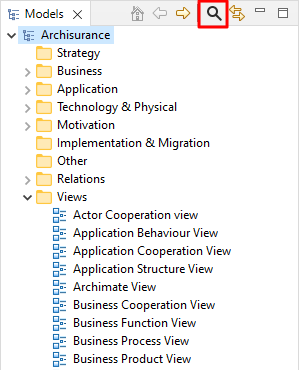
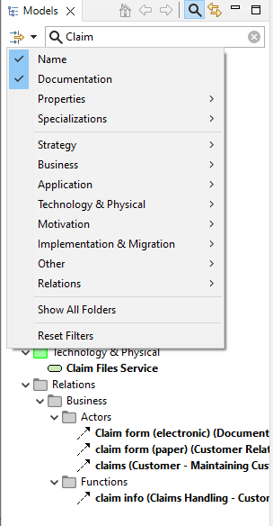
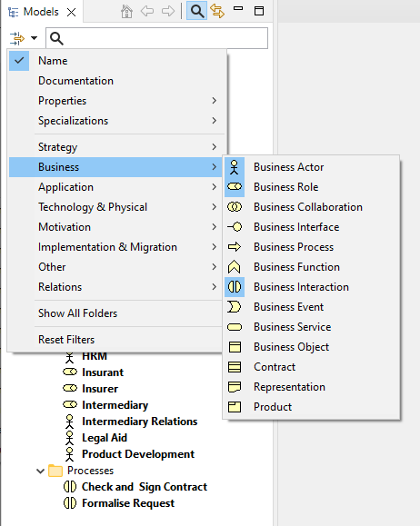
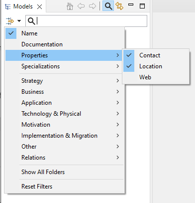

在您处理模型时，模型树中的对象数量会显着增加。当然，您可能希望在主文件夹结构中添加子文件夹以帮助组织这些对象。但是，在树中找到特定对象可能仍然很困难。
为了搜索模型树，Archi中包含一个搜索栏。这可以通过单击模型树窗口工具栏上的“搜索”按钮来访问。单击此按钮会显示搜索栏：
搜索栏显示
当您在搜索栏的文本字段中键入内容时，模型树会更新以仅显示与搜索栏中的搜索条件匹配的对象。默认情况下，只有对象的名称与搜索字符串匹配。您可以还可以通过在搜索栏中的“过滤器选项”下拉菜单中勾选此项来搜索对象的“文档”字段：
搜索“名称”和“文档”
要清除搜索文本选择，请单击文本右侧的图标。要清除过滤器，请取消选择“名称”和/或“文档”。
要过滤某些类型的ArchiMate概念，您可以在下拉菜单中选择要包含在过滤器/搜索中的类型：
过滤某些对象类型
要重置对象类型过滤器，请选择“重置过滤器”菜单项。
要过滤对象的用户属性，您可以在下拉菜单中选择要包含在过滤器/搜索中的属性键：
过滤用户属性
要过滤概念的特例化，您可以选择要包含在下拉菜单中的过滤器/搜索中的特例化，方法与属性相同。这将显示与所选特例化匹配的所有概念。
当您优化搜索时，模型树将仅显示那些与您的搜索/过滤条件匹配的对象（如果没有匹配的对象，则根本不显示）。因此，不显示没有匹配子对象的文件夹。但是，如果您希望在搜索对象时显示这些空文件夹（例如，您可能希望将对象拖放到其他文件夹），那么您可以通过选择“显示所有文件夹”将其设置为过滤器菜单中的一个选项。
要关闭搜索栏并重置搜索过滤器，请再按一次“搜索”按钮。
还可以按名称查找和替换模型树中的对象。

查找和替换对话框